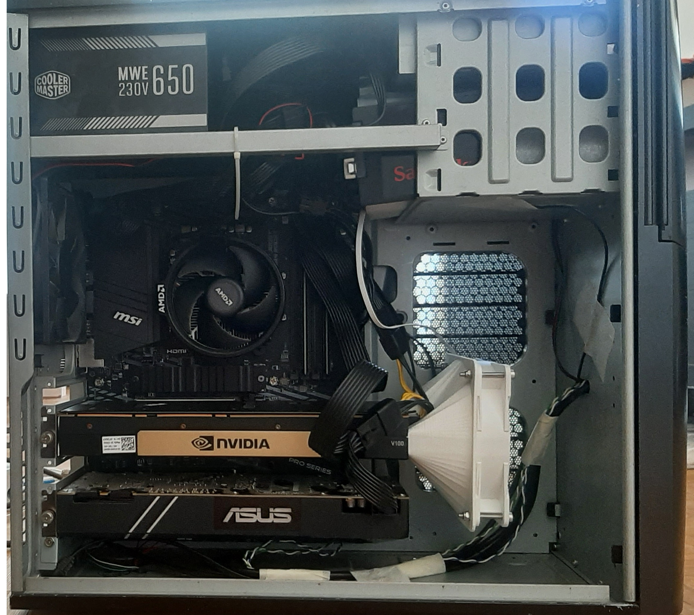
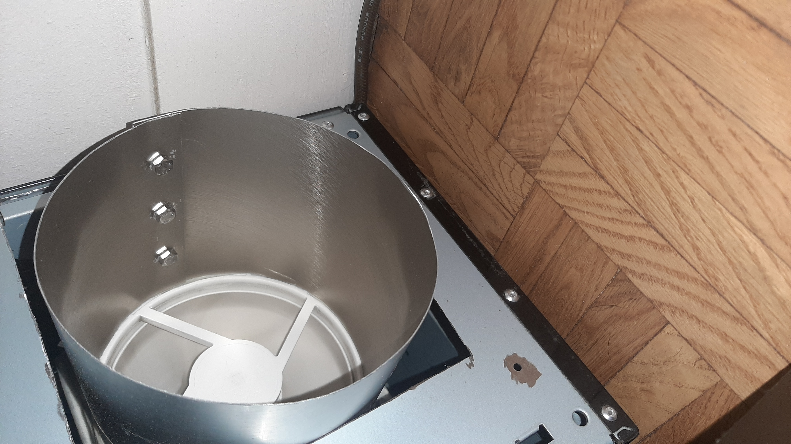

La V100 est arrivée le 14 septembre. Sauf qu'elle était une blade de datacenter, passive : sans ventilateur, sans shroud, conçue pour être placée dans un serveur dont le flux d'air est forcé par des ventilateurs de 140 mm à pleine puissance. Dans un boîtier de bureau, ça ne fonctionne pas. C'était le problème à résoudre, et il a pris dix jours.
Pour ceux qui veulent la machine complète : le boîtier du PC a quinze ans, mais le plateau dedans est neuf — MSI B550-A PRO, Ryzen 5 5600X, 32 Go de RAM, acheté en novembre 2025, monté dans le vieil habillage. La V100 et la 1070 sont les deux cartes, côte à côte.
J'avais déjà regardé les solutions de refroidissement avant la livraison. Le constat : ce qui existait, c'était « un bruit d'avion qui décolle dans mon salon ». Des kits à ventilateurs radiaux, des radiateurs surdimensionnés, des prix qui grimpaient. Rien de convaincant.
J'ai donc cherché sur Reddit, et quelqu'un y avait fait exactement ce qu'il me fallait : un ventilateur de 120 mm monté sur le shroud de la carte, en flux axial. Le bruit tombe d'un cran, et la place tient. J'ai pris un Arctic P12 max, un shroud, et le reste, je l'ai fabriqué.

Restait à guider l'air du ventilateur jusqu'à la grille, sans qu'il déborde sur les côtés. En aérodynamique, ça s'appelle un cône de Bézier — une surface de révolution, du genre de celles qu'on retrouve sur les tuyaux de vidange. J'en ai réalisé un dans une feuille d'aluminium, plié et fixé à la main.

Le boîtier du PC, lui, date de quinze ans. J'ai découpé le châssis au Dremel pour faire de la place à la carte, à son shroud — imprimé en 3D, façon shroud NVIDIA — et à son cône. Les disques durs ont fini dans les baies CD-ROM : plus personne n'en utilise, c'était la seule place disponible.
C'était le 24 septembre. Dix jours.
Premier boot : le PC s'allume, la carte tourne, mais l'écran reste noir. Le doute qui vient immédiatement : j'ai acheté une carte morte à 700 €.
Non. C'était un réglage BIOS. Le framebuffer de 32 Go de la V100 dépasse l'espace d'adressage sous 4 Go du chipset, et sans l'option Above 4G Decoding activée, le système ne peut pas initialiser la carte. ChatGPT m'a donné la réponse en une ligne. J'ai activé l'option, rebooté. L'écran s'est allumé. La carte était saine.
Le P12 max est PWM, branché sur un connecteur ventilateur de la carte mère. Sauf qu'il restait un point dur : le BIOS ne parvenait pas à lire la température de la V100. Une carte datacenter, ses capteurs ne se branchent pas sur ce que le contrôle de ventilateurs du BIOS sait lire. Du coup, aucune courbe de ventilateur du BIOS ne pouvait suivre la carte. Et une courbe figée, sur une machine qui tourne jour et nuit, c'est soit un avion au repos, soit une carte à 90 degrés en charge.
J'ai donc installé CoolerControl. Le démon fait exactement ce qu'il fallait : il lit la température GPU de la V100 — le système d'exploitation la voit parfaitement, c'est le BIOS qui est aveugle — et il pilote le canal PWM du ventilateur avec une courbe maison. J'ai dessiné la courbe, calibré. Le profil est toujours là : « GPU Fan (Performance, Calibrated) », la source de température : la V100.
Résultat : le ventilateur reste au régime bas, et monte quand la charge arrive. Une carte passive, en production jour et nuit, à température contrôlée — dans un boîtier plus vieux que la carte elle-même.
Et c'est là que tout a accéléré.
Jusqu'ici, le modèle qui tournait sur la 1070 était un 27B quantisé en Q4, à cheval sur la VRAM et la RAM système, avec un contexte limité. En basculant sur la V100, je suis passé en Q6, et le modèle s'est chargé intégralement sur la carte : 27B en Q6, 32 Go de HBM2, et 128 000 tokens de contexte. Le jour. Et la nuit.
Le mur du contexte — celui que je contournais depuis juillet avec le split des sources — est tombé d'un coup. Pas parce qu'il a bougé. Parce que la machine a grossi.
C'est aussi à ce moment que j'ai donné un shell à l'IA — plus le web search. La première action de l'IA : inspecter la machine. Le constat était sans appel. Services systemd écrits dans tous les sens, des wrappers pourris pour démarrer les services dépendants (open-terminal, searxng), des fichiers qui dataient de trois tentatives différentes. C'était ma machine, mon bricolage, mes dettes.
La première tâche : nettoyer tout ça. Et juste après, on est partis à la chasse aux tokens — ensemble. On tournait à 22 tokens par seconde en contexte minimal. C'était peu, mais c'était la base de mesures, et elle était saine.
Sauf que, très vite, deux constats ont posé problème :
Donc : soit un llama récent qui ne marchait pas sur ma carte, soit un llama qui marchait mais sans MTP. Les deux portes étaient fermées.
Je ne sais pas faire du C++ kernel. J'avais, par contre, un ancien build de llama.cpp qui contenait déjà une optimisation Volta — un truc qui compilait encore pour la carte, sur du code d'une autre époque. Alors j'ai démarré l'IA, et la première chose demandée : porter cette optimisation de l'ancien build sur le dernier llama.cpp. Merge, compilation, tests : le travail lourd, c'est l'IA qui l'a fait. Le cadrage — ce qu'on portait, pourquoi, sur quelle base — c'était moi.
C'est comme ça que le fork llama-volta-merged est apparu. Le nom dit tout : le dernier llama.cpp, plus l'optimisation Volta portée depuis l'ancien. Le fork n'est pas né de l'optimisation : il est né d'un besoin de compilation. Les optimisations vraies sont venues après, dans la chasse.